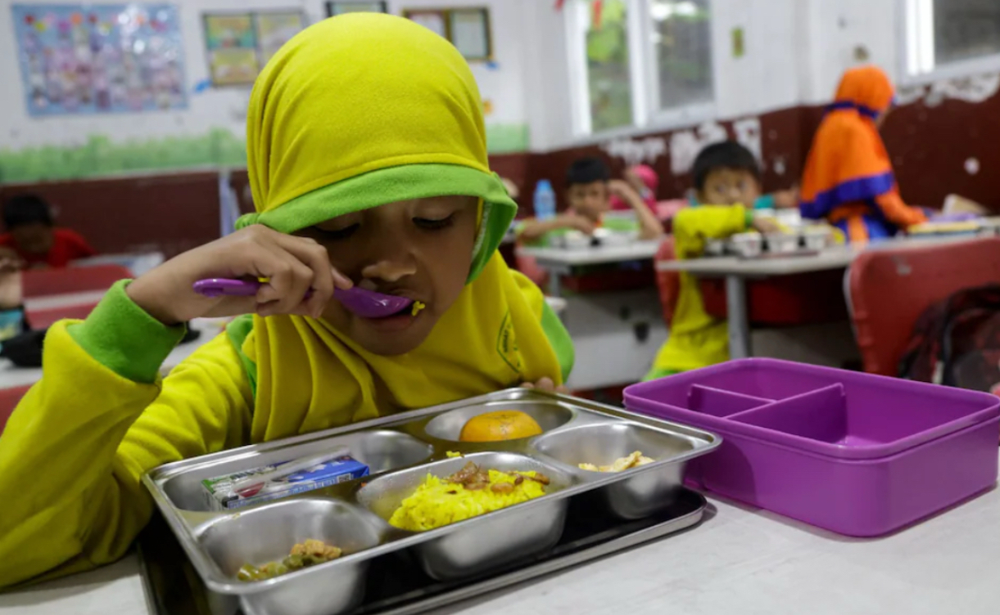

Multiple citizens throw rocks at parliament and try to raid it. Police are quickly dispatched to break up the mob using incendiary grenades.
There’s a program in Indonesia where children can get free meals. It was created to eliminate hunger. However, the children eating the food from this program started getting really sick, and some of them even had to be hospitalized. The foods were all heavily processed and contained bacteria that caused food poisoning. Because of this, lots of protests started to emerge, which caused the quality of the program to drastically decrease. Parents also started suggesting that their kids start bringing food from home instead of consuming the program’s meals. Overall, this program was angering adults not just because of the poor quality, but also because they felt that the government was “irresponsibly spending” their tax money.There’s a program in Indonesia where children can get free meals. It was created to eliminate hunger. However, the children eating the food from this program started getting really sick, and some of them even had to be hospitalized. The foods were all heavily processed and contained bacteria that caused food poisoning. Because of this, lots of protests started to emerge, which caused the quality of the program to drastically decrease. Parents also started suggesting that their kids start bringing food from home instead of consuming the program’s meals. Overall, this program was angering adults not just because of the poor quality, but also because they felt that the government was “irresponsibly spending” their tax money.
